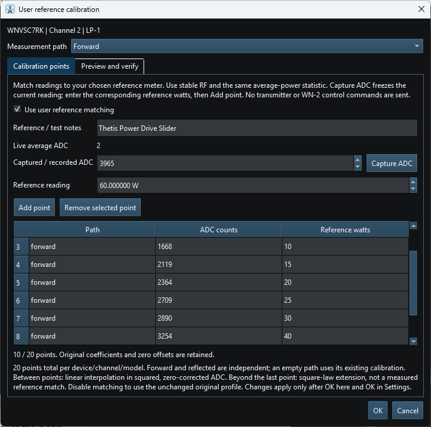
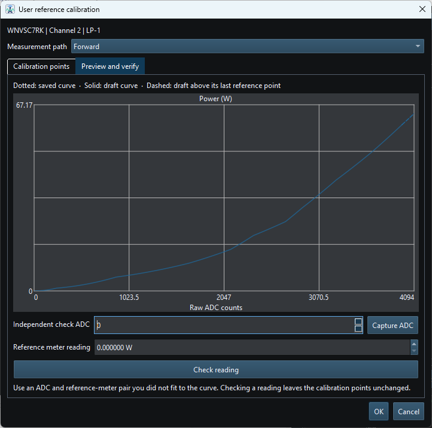

User reference-matching calibration
On this page
When to use this feature
Your RF couplers are factory calibrated; additional calibration is not required. User reference matching is optional. Use it when you want RayWn2App's power readings to follow a particular meter of your choosing. The reference may be a laboratory instrument or the wattmeter built into your amplifier. You do not have to supply a laboratory certificate or a pre-existing reference data file. The result follows the reference you choose, including its limitations.
Open the editor
Open Device → Settings → RF couplers, select the intended WN-2/channel/model and click User reference calibration. Check the identity and coupler before entering points.
Build a curve
- Begin with the existing normal coupler settings.
- Establish a stable power level that is appropriate for your station and load.
- Select Forward or Reflected in the editor. Capture ADC freezes the selected input's raw reading. Enter the corresponding watts shown by your reference meter.
- Click Add point. Repeat at useful levels across your operating range, up to 20 points total shared between forward and reflected for that device/channel/model. Match each direction to a reference measurement of that same direction.
- Review the points and check Use user reference matching, press OK, then press OK in Settings when satisfied. Use increasing, sensible pairs and avoid duplicate or contradictory points. Do not use clipped or invalid readings. You control the transmitter; the editor does not generate RF or set drive power.
What changes
The application adjusts displayed power between the entered points. Each curve belongs to one WN-2, channel and coupler model. It is not a general correction for every coupler or device. Related application calculations use the corrected readings. This does not alter the factory calibration inside the coupler or the WN-2's own LCD/protection behavior. Keep that distinction in mind if the application and hardware displays differ.
Review or return to normal
Keep a record of the reference and conditions used. If the reference or station changes, review the curve. Disabling user reference matching returns to the underlying coupler conversion; it does not require deleting your saved points.
Preview and verify a reading
- Choose Forward or Reflected, then open Preview and verify. The dotted curve is the profile you opened. The solid curve is the draft, including the current reference-matching checkbox setting. The dashed part continues above the last reference point using the stored square-law extension.
- Use a steady reading from your chosen reference meter that you did not use to fit the curve. Click Capture ADC to freeze the fresh WN-2 reading, or enter a recorded ADC count.
- Enter the matching reference watts and select Check reading. Compare saved and draft watts and their errors relative to the reference. A zero-watt reference shows the error in watts. The draft region identifies interpolation, extrapolation, or use of the stored coefficients.
Verification leaves the calibration points unchanged. Apply a draft through the calibration dialog and Device Settings when you have completed the comparison.
Example with the Thetis Drive slider
Ray used the Thetis Drive slider to step through transmit levels while testing the forward path of the LP-1 coupler on CH 2. The slider sets drive as a percentage. Enter the corresponding average power in watts from your chosen reference meter.

CH 2 calibration points from the Thetis Drive test. Select image to enlarge.


The draft curve maps raw ADC counts to watts. Select image to enlarge.

Help home · RF StateSide · RayWn2App operator guide